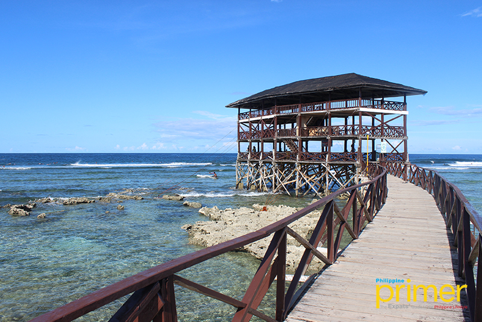
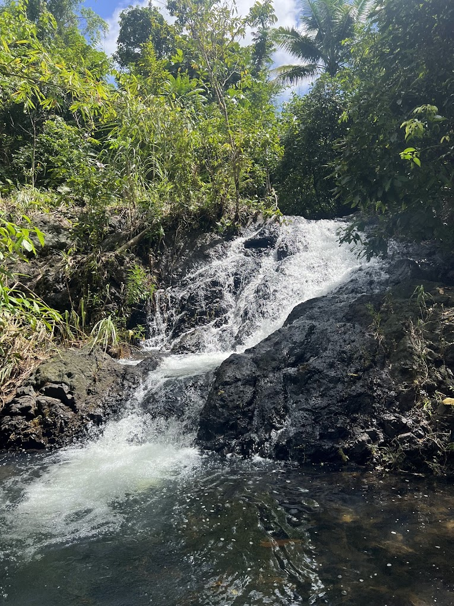
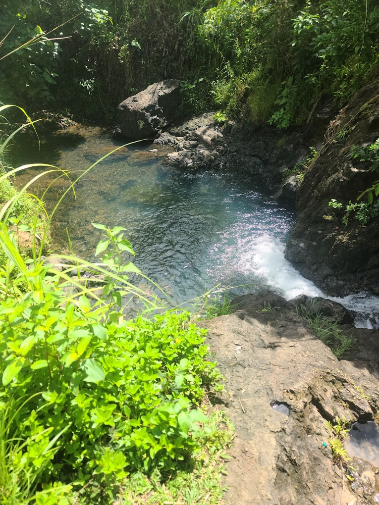
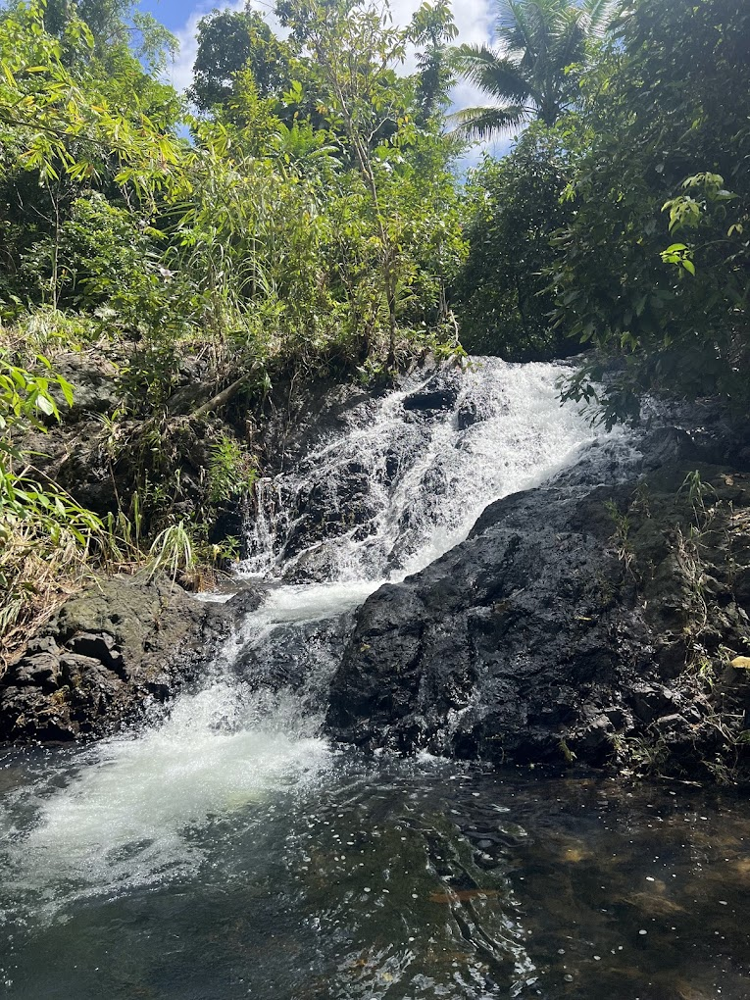
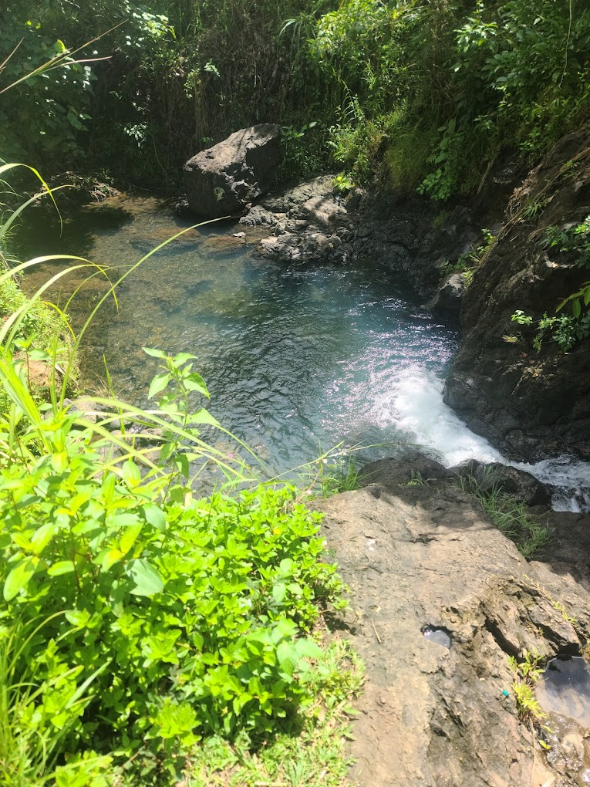

General Luna
General Luna is the surfing capital of Siargao, famous for the legendary Cloud 9 waves. Feel the thrill of the ocean, relax on pristine white sands, and enjoy lively beachside cafes and bars.
Discover the breathtaking beauty, rich culture, and unforgettable experiences that each municipality of Siargao has to offer. Your adventure starts here!
General Luna is the surfing capital of Siargao, famous for the legendary Cloud 9 waves. Feel the thrill of the ocean, relax on pristine white sands, and enjoy lively beachside cafes and bars.
Dapa is the gateway to Siargao, where culture and commerce meet. Explore vibrant markets, savor fresh seafood, and experience the warm hospitality of the locals.
Home to the largest mangrove forest in the Philippines, Del Carmen offers serene boat rides through nature’s wonders and the enchanting Sohoton Cove with its limestone caves and turquoise lagoons.

Experience the heart of Siargao’s agriculture in San Isidro, where lush rice fields meet the sea. Enjoy fresh local produce and witness traditional fishing methods still alive today.
Relax on the powdery white sands of Santa Monica, where time slows down. Discover traditional crafts and enjoy the peaceful island vibe away from the crowds.


Pilar is a vibrant community where agriculture, fishing, and handicrafts thrive. Engage with locals and bring home unique souvenirs made with love and tradition.
Discover the natural wonder of Magpupungko Rock Pools in Burgos. Swim in crystal-clear tidal pools surrounded by stunning rock formations and untouched nature.
Explore Socorro’s pristine islands and dive into vibrant coral reefs teeming with marine life. Visit the stunning Sohoton Cove National Park for unforgettable adventures.
 



Escape the crowds and enjoy the untouched beauty of San Benito. Perfect for travelers seeking peace, quiet, and pristine nature far from the usual tourist paths.